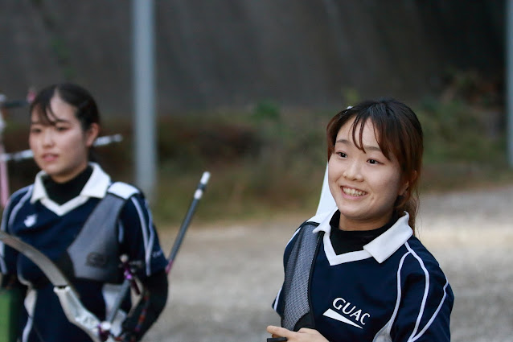

６回目の今日は経済学部経済学科の池永奈々美さんです！池永さんは来年度新人指導を務める部員で新歓部長としても現在活躍しています。新人指導は新しく入ってくださる１年生と一番多く関わる役職なので部活で困ったことがあった時はぜひぜひ彼女に相談してみてください。
マクロ、ミクロなどの主要な科目はもちろん、金融や財政、数学など様々な科目があり、自分の学びたい専攻を選んで履修できる点が経済学科の良いところだと思います！2年後期から始まる少人数制のゼミも特徴です。2年間オンライン授業がほとんどではありましたが、毎週出される課題を提出してしまえば、そこまで課題に追われるということはありませんでした。オンライン試験とレポートの比率は6:4でした！
中高とフットサル部に所属していたのですが、大学生になったら何か違うスポーツにも挑戦したいと思っていました。私が大学1年生になった時、履修相談にいち早くのってくださったのがアーチェリー部の先輩で、体験会に行った際にも優しく対応してくださったのと、弓で風船を割れた時アーチェリーってすごい！楽しい！と思ったのが決め手です。
経済学科は課題をきちんと終わらせれば、それ以外の時間は比較的自由に時間を使うことが出来るので、授業前後に練習しに行けます。テスト週間は忙しいですがノルマの調整もできるので、勉強する時間と部活動を行う時間、どちらもちゃんととれます！
初心者でも入部しやすい所です！新人指導の先輩が一人一人に細かく指導してくださるので、どんどん上達できますし、その度嬉しさがすごいです！笑
弓具を揃えはじめた時は特に何も考えず、青色が好きだったのでブルーシルバーという色のハンドルを買ったり、クイーバーのカラーに青色を入れてみたりしたのですが、逆にここまで揃えたなら他のも揃えてしまおう！と考えた結果身の回りの道具が青色だらけになってます。
1年生の時友達が全くできませんでした。コロナ禍の影響で同級生と初めて会ったのが9月くらいにあった健康診断でした。
部活に入って先輩後輩同輩とたくさん話せてとても嬉しいです。
まずは！新入生の皆さん、ご入学おめでとうございます。そしてここまでお読みいただきありがとうございます。まだまだ不安定な世の中ではありますが、新入生の皆さんが充実した大学生活を送れますよう、部員一同皆さんのお手伝いをして行けたらなと思います！
いかがだったでしょうか。インタビュー中にもあった体験会での風船割りは今年も実施する予定なのでぜひ皆さんも足を運んでみてください！次回は国際社会科学部国際社会科学科の青木花凜さんです！